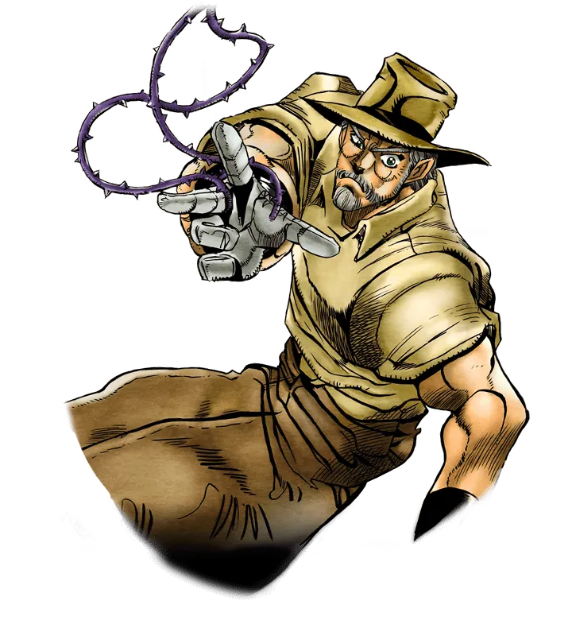
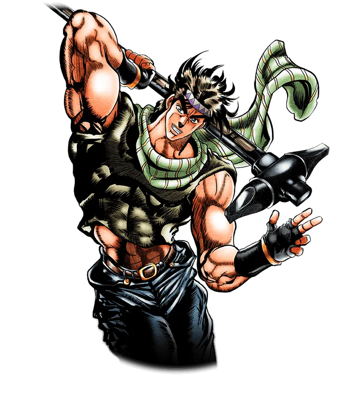
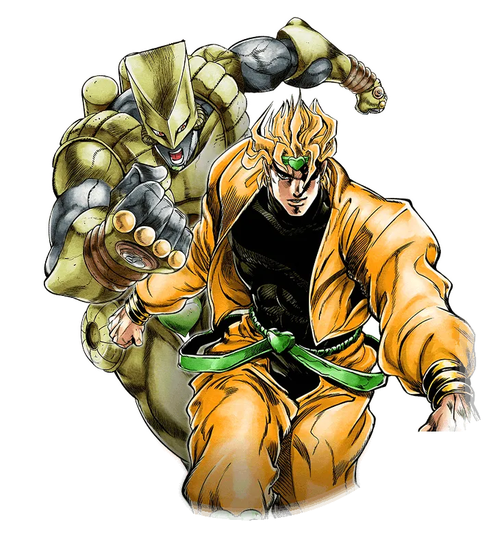

만약 3부에서 할배가 전성기였다면


디오 1대1로 이겼다 못이겼다
2부 보스 카즈에비교하면 디오는 씹범부라 이긴다는의견과
시간정지가 좆으로 보이냐는 의견이 끝없이 대립중

만약 3부에서 할배가 전성기였다면


디오 1대1로 이겼다 못이겼다
2부 보스 카즈에비교하면 디오는 씹범부라 이긴다는의견과
시간정지가 좆으로 보이냐는 의견이 끝없이 대립중
운빨로 파문 상처는 낼지언정 이기지는 못할듯
시간정지로 튀지도 못하고 운도 뽐낼곳도 없음
적석 레이저로 대가리 빵구 내는거 말고 승리플랜이 안보임
시간정지 정도로 죠셉을 이길수가 있을리가 없음 단순 파워로 결판 났으면 스트레이쵸(혈귀,파문 사용자,기습)에서 이미 끝났지
허미트 피플 있고 더월드의 능력 미리 알고있음정도로 싸워도 디오가 6일거같은데…
스탠드 없는데 어캐 이기노 대체... 죠셉의 예지수준의 예측도 정보량이 있어야 가능한건데
하지만 전성기 죠셉이 진다는건 상상할 수 없음
혼자 장르자체가 다른 놈이라 뭔가 이겼을거같은 기대감이 있음
젊을때 스탠드 발현했으면 성장성이 높지않았을까
파문 자체의 흡혈귀 상성도 있고
시간정지 << 뭔가 죠셉이라면 바로 유추할수 있을거같음ㅋㅋ 근데 dio님이 늙셉 파문 견제해서 나이프썼는데 제아무리 죠셉이라도 체크메이트와 로드롤러를 파훼할수 있을런지
ㄹㅇ ㅋㅋ 두번정도 시간정지에 당한다음. "이제 알았다 디오 네 능력의 비밀을!"하면서 공격 파훼하다가, 당황한 디오가 로드롤러 시전하려고 시간정지 쓰기 직전에 "넌이렇게 말할것이다." 대사딱 한번 쳐놓고 디오 존나 궁금하고 신경쓰이게 한다음. 시간정지 끝나자마자 죠셉이 "로드롤러다!" 먼저하고 디오가 존나 당황하면서 "나니? 어떻게 알았지?"하고 당황하는 동안 오라오라로 선빵쳐서 이기는 거 까지가 클리세임.
할배 능력이 뭔지라도 좀 알려줘.. 죠죠 안보는 사람은 이해가 안돼
염사, 덩굴을 이용한 약간의 물리력, 파문(흡혈귀 태워죽임)
전투에 쓸 수 있는 능력만 따지면
스파이더맨처럼 덩굴을 날려서 활공하거나 끌어당기기 가능
DIO 같은 흡혈귀를 잡을 때 치명적인 버프를 걸 수 있는 파문 호흡법 사용 가능
근데 맷집은 좀 튼튼한 인간이고 기술이 전부 근접용이라서 이길 수 있을지 모르겠네
근데 할배가 뇌지컬, 야바위로 이기는 스타일 저런거보다
솔직히 카즈는 그냥 운빨로 이긴거지
어떻게든 비벼보긴 하겠지만 확정킬은 못낼거 같음
자외선 조사장치 하나만 가져갔어도....
디오가 흡혈귀 몸이면 오히려 못 이길거 같은데. 차라리 인간 몸이면 디오가 개 ㅈ 바를듯
정답은 아라키 마음대로임
영감탱이가 이겼냐 지구가 이겼지
댓글로 운빨로 이겼다는데 그 전개 억빠가 2부 죠셉의 능력인거라
맞음 주인공 버프가 죠셉 능력이었음 3부에서 주인공 버프가 빠진거고
주인공 버프 있는 죠셉이었으면 1.시간능력 간파, 2.시간능력 공략, 3.파문먹이기로 이겼을텐데 버프가 없으면 1,2 가 안될듯 실제로 3부에서 1은 했는데 2를 못해서 당했으니
전성기 죠셉이면 어떻게든 이길수도 있다는 기대감이 있음..
또 주인공 전개빼고도 3부때처럼 허무하게 질거 같지도 않음
죠셉이 질거 같진 않은데
냉정하게 디오 스탠드가 사기라
3부 죠셉이 전성기로 젊어져봐야 딱히 뭐 어쩌긴 힘들거 같고
난 죠죠 1부 2부 초반 그리고 쿠조조린인가? 주인공 딸이 교도소 가는거 조금 본편인데
그정도만 본 이유는 취향이 안맞아서 드랍된거긴한데 그건 차치하고
쿠조조린이 이전작품 주인공 딸인거아님? 전작 주인공이면 꽤나 강캐일텐데
내기억에 그 사람이 종이처럽 얇아져서 빌런한테 먹혔나? 잡혔나? 대충 그런 느낌인데
이전작이라고 너프한거임? 아니면 그 아빠가 약하고 빌런이 쌘거임?
죠죠는 약간 드래곤볼처럼 대를 이으면 강해지는 그런컨셉임?
보통 전작에 나온 주인공이 다음작에 등장하면 약해지는 느낌임
아무래도 새로운 주인공한테 집중해야 되니까 그런 듯
스토리 푸는데 강캐가 미쳐날뛰는걸 막아야되는데 그걸 쉬운길로 간거네 설정이 좀 아쉽구만
죠죠는 부 단위로 스토리가 완결나니까 그 부에서 활약한 주인공은 엔딩에서 능력치가 이미 완성되어 있음
그 상태로 다음 부 시작 때 그대로 등장해버리면 파워인플레로 이어질 수 밖에 없으니 적당히 너프해야지
안그러면 굳이 새 주인공이 처음부터 성장하지 않아도 이전 주인공 혼자서 다 이기니까
그리고 1, 2부랑 6부만 본거면 죠린은 3부 주인공의 딸로 3부랑 6부는 약 20년의 차이가 있어서 전작 주인공이 그렇게 약해진것도 이해가되긴함.
아 내가본게 6부임? 몰랐음 바로 다음 시리즈인줄
이전 주인공들이 너무 강하니깐 너프하는것도 있긴한데.
설정상 스텐드가 정신에너지라서 부 단위 스토리가 진행되는 중은 계속해서 싸우고 위기 극복해서 개쌔지는데 그이후로는 일반인 생활하고 세월이 지나서 정신이 그때보단 약해짐으로 스탠드가 그때 그 파워가 안나온다는것으로 설정을 매꾸고 있음.
아 ㅇㅋ 이런정보 고마움
3부 죠셉도 파문 때문에 여전히 신체능력은 좋은데다 쓸모없다고 해도 스탠드도 있어서 전투력이 좋으면 좋았지 약하진 않을껀데.
스탄도 파와!!!!!!!(두둥!!!!)
디오는 일단 기본적으로 인간이 아니라 돌가면으로 생산된 흡혈귀라서 파문 공격에 매우 취약함. 실제로 파문 때문에 원거리 공격한거지 파문에 맞으면 스타플래티나 한테 처맞는거랑은 차원이 다르게 뒤짐.
죠셉이 디오 능력이 5초 시간 정지(이후 시간정지 향상은 죠셉 피빨고 된거니까 논외)라는 것을 전투 시작 전에 이미 알고 있다는 조건을 깔아주면 주인공 버프빨도 있지만 죠셉이 디오보다 훨씬 전략적인 수를 깔아두고 싸움에 임하는터라 충분히 이길 수 있다고 봄.
다행히 디오 스탠드 더월드는 2미터 근거리 파워형이라 스탠드 자체 공격때문에 애먹을 일도 없음.
카즈도 개 털리고나서 그냥 운빨로 이긴건데 ㅋㅋㅋㅋㅋ
전성기에 허밋퍼플도 있다면 가능성은 있을것같음. 여기저기 트랩깔고 본인은 허밋퍼플로 가드치면 가능성은 있음. 근데 가능성이 있다지 역시 불리할것같네